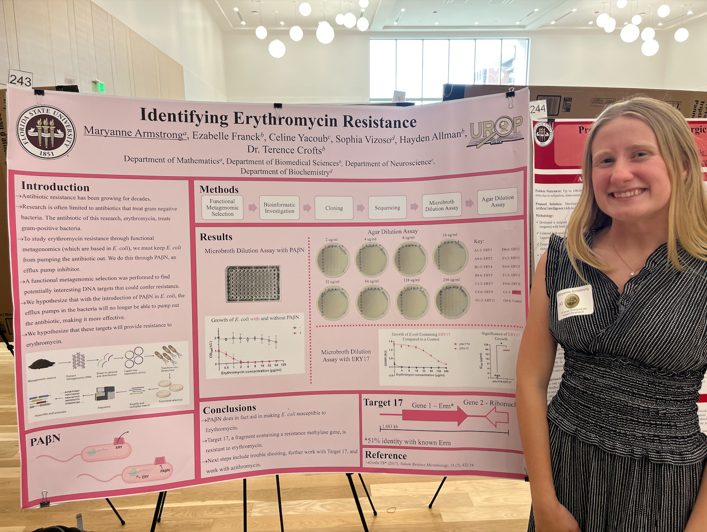
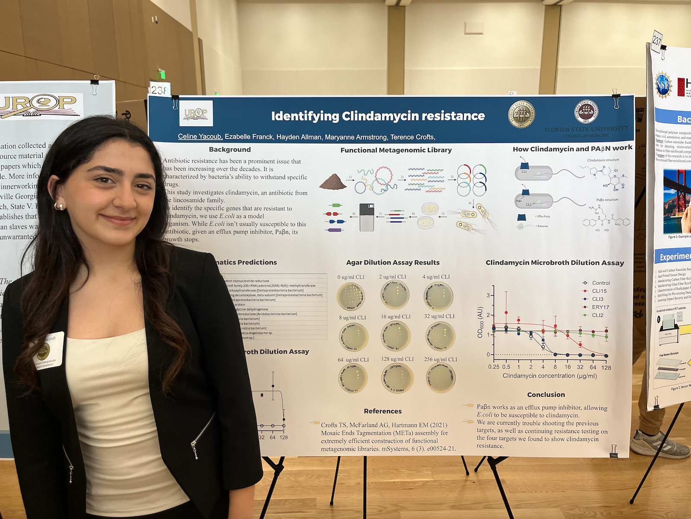
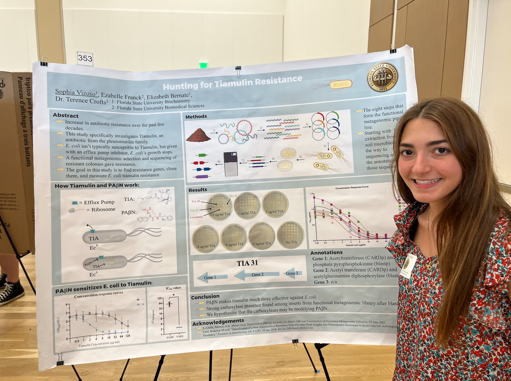

October 3, 2023


The Crofts Lab welcomes their new UROP students, Maryanne and Celine! Welcome to the lab you two!
Undergraduate researchers in the Crofts lab, Maryanne Armstrong, Celine Yacoub, and Sophia Vizoso presented their research at the 24th annual Florida State University Undergraduate Research Symposium! Their research focuses on identifying novel antibiotic resistance genes within E. coli.
Maryanne presented her research on Erythromycin resistance!
Celine presented her research on Clindamycin resistance!
Sophia presented her research on Tiamulin resistance!
Sophia Vizoso, undergraduate student in the Crofts lab, presented her poster "Hunting for Tiaumulin Resistance" at the 2024 Florida Undergraduate Research Conference (FURC) hosted by the University of North Florida in Jacksonville, FL! Great work Sophia!
Elizabeth started her position as Lab Manager in the Crofts lab!
Elizabeth Bernate, undergraduate student in the Crofts lab, won second place in the Undergraduate Student Poster Presentation at the SEB-ASM conference at Auburn University! Way to go Elizabeth!
The Crofts Lab welcomes their new UROP students, Maryanne and Celine! Welcome to the lab you two!
The Crofts lab welcomes their new lab manager, Hayden!
The Crofts lab (Terence, Elizabeth, and Ezzy) celebrate the end of the semester with lab lunch!
Elizabeth and Sophia presented the culmination of 6 months of research in the Crofts' microbiology lab at the 23rd annual Florida State University Undergraduate Research Symposium.
Pictured Left: Elizabeth has been studying genes from the goose gut microbiome that confer resistance to the medically vital antibiotic colistin. She found several new genes that allow E. coli to become resistant to high levels of this antibiotic and their presence in the goose gut microbiome has important implications for colistin use in agriculture and medicine and the potential for resistance genes to be spread.
Pictured Right: Sophia's project focuses on the antibiotic tiamulin. While not normally susceptible to it, E. coli can be made vulnerable through the use of efflux pump inhibitors, allowing Sophia to use this bacterium to study novel tiamulin resistance genes from the environment.